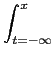
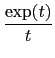
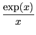
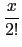
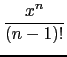
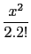
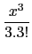

suivant: La fonction cosinus integral
monter: Les réels
précédent: La fonction racine n-ième
Table des matières
Index
La fonction exponentielle integrale Ei : Ei
Ei a comme argument un nombre complexe a.
Ei calcule les valeurs de la fonction Ei au point a.
On a par définition :
Ei(x) = dt
Pour x > 0, on prolonge par la valeur principale de l'intégrale
(les morceaux en 0- et 0+ se compensent).
On a :
Ei(0) = -

,
Ei(-
) = 0
Lorsque l'on est proche de x = 0 on sait que :
 =

+1 +  +

+ ... + ....
Ei(
x) = ln(-
x) +

+
x +  +  + ...
sauf sur l'axe x > 0 où on prend ln(x)
(la fonction est discontinue sur
 +).
+).
On tape :
Ei(1.)
On obtient :
1.89511781636
On tape :
Ei(-1.)
On obtient :
-0.219383934396
On tape :
Ei(1.)-Ei(-1.)
On obtient :
2.11450175075
On tape :
int((exp(x)-1)/x,x=-1..1.)
On obtient :
2.11450175075
suivant: La fonction cosinus integral
monter: Les réels
précédent: La fonction racine n-ième
Table des matières
Index
Documentation de giac écrite par Renée De Graeve